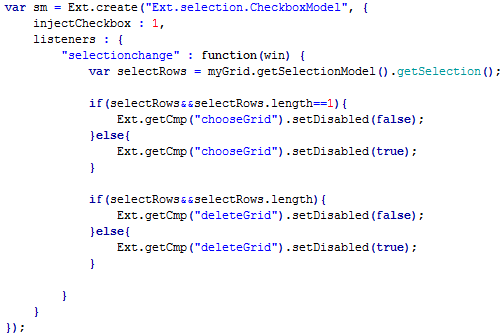

1.选择框列默认显示在第二列。
2.根据选择的记录数据的记录条数和内容，实现禁用修改、删除等按钮功能
示例效果说明：
1.不能修改或删除"管理员"角色。
示例源码：查看
示例后台返回数据：查看
引入控件JS文件
<script type="text/javascript" src="../../scripts/extjs/ux/ExtjsExtend.js"></script>
扩展功能1，不需额外编写代码。
扩展功能2：
在"修改"按钮的定义配置里添加属性 "禁用表达式"
disabledExpr : "$selectedRows != 1 || $roleCode=='admin'"
$selectedRows 表示当前选择的行数， $roleCode表示选择角色记录(record) 的 roleCode 属性。
所以，表达式的含义为：选择的记录数不等于1 或者 选中的记录中包含角色编码为 'admin' 的记录时，禁用"修改"按钮。
参考代码如下：
{
xtype : 'button',
text : '修改',
disabledExpr : "$selectedRows != 1 || $roleCode=='admin'",
disabled : true
}, {
xtype : 'button',
text : '删除',
disabledExpr : "$selectedRows == 0 || $roleCode=='admin'",
disabled : true
}
原始写法对照： 需要定义每个按钮的id，且在一个页面中存在多个selModel时不能复用
